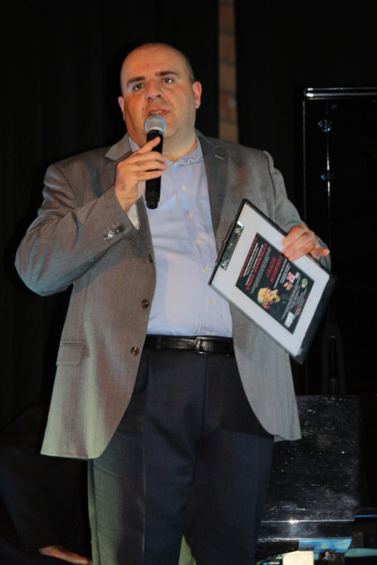
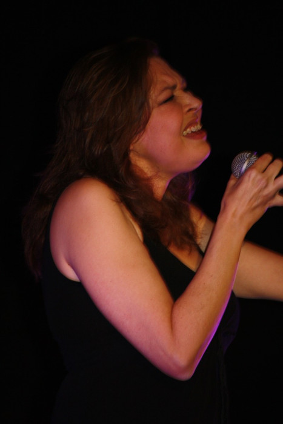
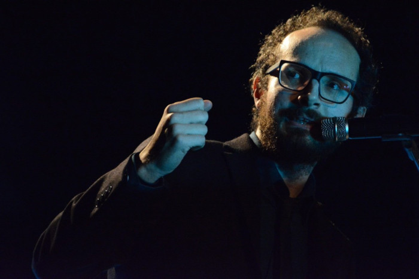

Elena Paoletti
Andrea Perinelli: sapiente conduttore dello spettacolo, critico musicale di vaglia, scrittore (suo il volume “Roba minima – mica tanto” dedicato a Jannacci) e appassionato cultore della sua arte. Riconosciuto dalla famiglia Jannacci come biografo ufficiale di Enzo.

Davide Zilli